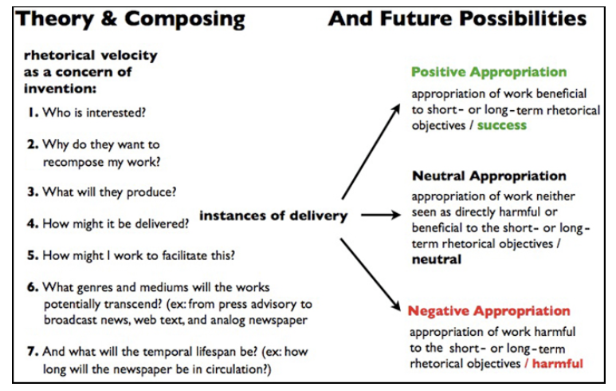
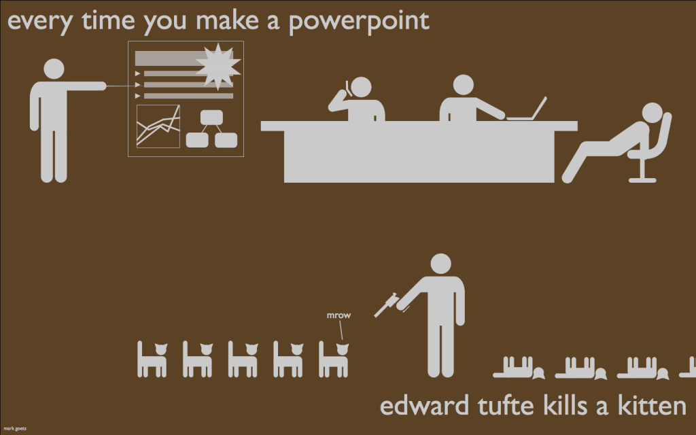
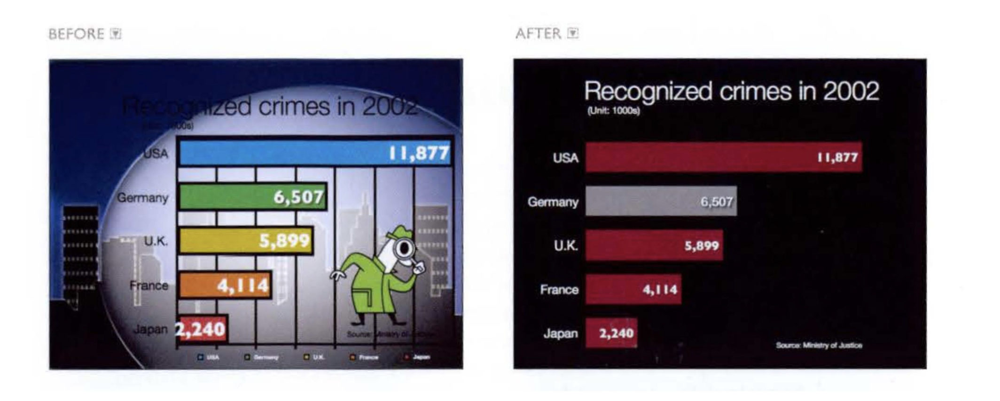
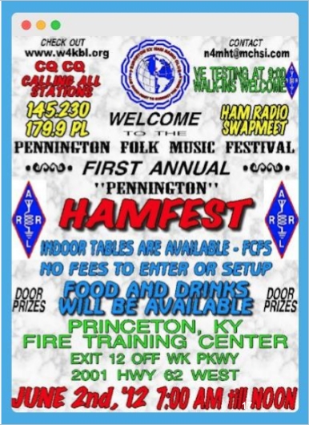

English 213 Slides
Table of Contents
Introduction
This document collects the slide content presented in your English 213 course for your review. Note that this is the exact same content included on slides, without any additional explanatory material. Slide content is not a substitute for attending class and likely will not make sense without that classroom context. I will update this same file as the semester progresses (please remind me if I've forgotten) so make sure to check back often if you find it helpful as a supplemental document.
Last updated October 28, 2026.
Week 1 / Thursday
Literacies
Specialized and practical knowledge, usually related to communication, within a particular context.
- Academic literacies
- Professional literacies
- Digital literacies
Selber's Multiliteracies
- Functional literacy: Our ability to effectively use tools and technologies for communciation tasks.
- Critical literacy: Our Our ability to analyze and critique the use and effects of tools and technologies at the individual, organizational, and public levels.
- Rhetorical literacy: Our ability to consider and employ tools and technologies for persuasive goals.
Critical Terms
- Agency and determinism.
- Affordances and limitations.
Agency and Determinism
- Agency: The degree of freedom and control we have in a particular situation.
- Determinism: The degree to which a particular situation determines our possibilities.
Affordances and Limitations
- Affordances: The uses, activities, and practices that are afforded, suggested, and/or incentivized by a tool or technology. More simply: What a tool allows or suggests taht you do with it.
- Limitations: Uses, activities, and practices that are limited or impossible with a particular tool.
A Non-Profit Fundraising Campaign: Instagram Post
What are the affordances and limitations of the medium?
A Non-Profit Fundraising Campaign: A Snail Mail Campaign
What are the affordances and limitations of the medium?
Discussion Question
What affordances and limitations did your assigned tool offer in the earlier activity?
Week 4 / Thursday
Markup Languages
A markup language, which is distinct from "writing code," can be defined as:
a text-encoding system which specifies the structure and formatting of a document and potentially the relationships among its parts. Markup can control the display of a document or enrich its content to facilitate automated processing.
WYSIWYG vs. Plain Text Editors
WYSIWYG ("What You See is What You Get") editors display formatted text while you type, whereas plain text editors omit formatting, often so that the "plain" text can be put into alternative displays.
Why Plain Text?
Plain text writing separates the domains of content and presentation (also sometimes referred to as views or displays) in digital environments. For what reasons might this be useful?
Examples of Plain Text Markup Languages
- HTML
- XML
- Tex (LaTex)
- Markdown
Key Affordances
- Separating content from presentation
- Modularity
- Reuse
- Stability and preservation
- Accessibility
- Intentionality
Week 5 / Tuesday
Content Strategy - Definition
Content strategy guides the planning, development, and management of content. It is a recognized field in user experience design, and it also draws from adjacent disciplines such as information architecture, content management, business analysis, digital marketing, and technical communication. – Wikipedia
Content Strategy - Rhetorical Elements
- Audience
- Purpose
- Timing
- Context
- Circulation
Content Strategy - Processes
According to Clark, content strategy:
- Integrates content, organizations, and its members at all stages of writing.
- Aligns with authorial/organizational goals.
- Emphasizes collaborative writing and knowledge.
- Offers repeatable workflows.
- Develops new understandings of methods and tools (2018 p. 65).
Rhetorical Velocity

Figure 1: Ridolfo and DeVoss's diagram of "composing for recomposition."
Week 6 / Tuesday
The "Long Tail" of Circulation
Based on these unique findings, we argue that consideration in science communication on social media needs to be made in terms of not only thinking about the immediate production, but also the long-term, long tail of prevailing value such work has on a viewer long after an initial view. This perspective adds to existing scholarship on practical production and engagement recommendations for science communication. It also extends the conversation when thinking about its long-term potential. Both are important elements to contribute to in today's fast-paced (social) media landscape. Moreover, this might help highlight how digital media provide opportunities like opening up access to scientific sources, new ways and spaces to communicate and interact, and a potential to diversify who are involved and engage in science communication (Fähnrich, qtd. in Young et al.).
Week 10 / Thursday
Question
You are asked to give a presentation. What do you need to prepare?
Tufte Has Feelings
Imagine a widely used and expensive prescription drug that claimed to make us beautiful but didn’t. Instead the drug had frequent, serious side effects: making us stupid, degrading the quality and credibility of our communication, turning us into bores, wasting our colleagues’ time. These side effects, and the resulting unsatisfactory cost/benefit ratio, would rightly lead to a worldwide product recall.
– Tufte, The Cognitive Style of Powerpoint, 24
On Bullet Points
How is it that each elaborate architecture of thought always fits exactly on one slide? The rigid slide- by-slide hierarchies, indifferent to content, slice and dice the evidence into arbitrary compartments, producing an anti-narrative with choppy continuity. Medieval in its preoccupation with hierarchical distinctions, the PowerPoint format signals every bullet’s status in 4 or 5 different simultaneous ways: by the order in sequence, extent of indent, size of bullet, style of bullet, and size of type associated with various bullets.
– Tufte, The Cognitive Style of Powerpoint, 10
Low-Resolution Display, Low-Resolution Thinking
PP slides projected up on the wall are very low resolution—compared to paper, 35mm slides, and the immensely greater capacities of the human eye-brain system. Impoverished space leads to over-generalizations, imprecise statements, slogans, lightweight evidence, abrupt and thinly-argued claims.
– Tufte, The Cognitive Style of Powerpoint, 4
The Dictatorial Style of PowerPoint
The pushy PP style imposes itself on the audience and, at times, seeks to set up a dominance relationship between speaker and audience. The speaker, after all, is making power points with bullets to followers. Such aggressive, stereotyped, over-managed presentations–the Great Leader up on the pedestal–are characteristic of hegemonic systems. . . . A better metaphor for presentations is good teaching.
– Tufte, The Cognitive Style of Powerpoint, 13
Templates
The PP cognitive style is propagated by the templates, textbooks, style- sheets, and complete pitches available for purchase. Some corporations and government agencies require employees to use designated PPPhluft and presentation logo-wear. With their strict generic formats, these designer stylesheets serve only to enforce the limitations of PowerPoint, compromising the presenter, the content, and, ultimately, the audience.
– Tufte, The Cognitive Style of Powerpoint, 19
The Infamous Tufte Meme

Figure 2: I'm sorry.
Slide Design: Foreground What's Important
Audiences are bored by bullet-points and learn nothing. Craft a narrative with your slides that supports your presentation. Prioritize content over everything, especially templates. A slide might look nice. But did anyone learn anything?
Slide Design: Signal to Noise Ratio

Figure 3: Information over everything. (Especially aesthetics.)
Slide Design: The Picture Superiority Effect
Figure 4: Images stick, text (usually) doesn't. Photo by Marija Zaric on Unsplash.
Slide Design: Prioritize White Space

Figure 5: It's hard to take anything away from this.
Slide Design: Consider Alternative Formats
Slides are not synonymous with presentations. Handouts, maps, singular charts, or even no visual supplement are all valid choices when preparing a presentation.